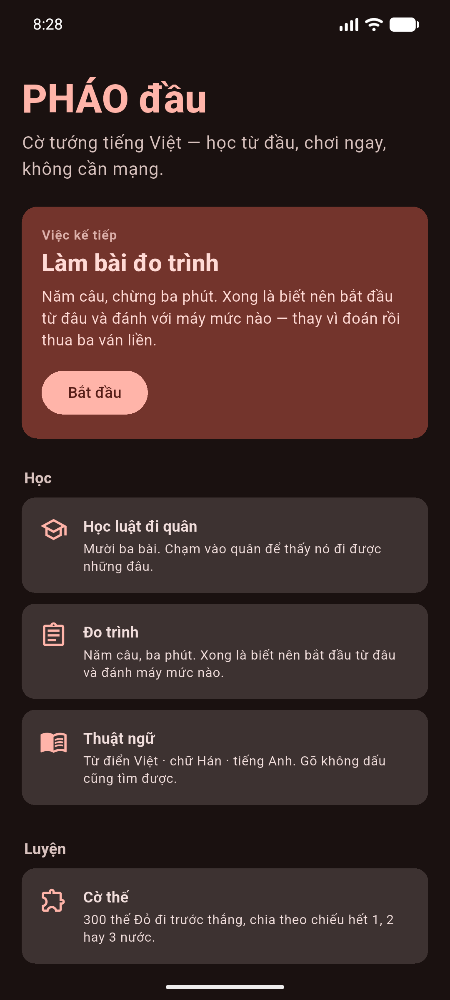
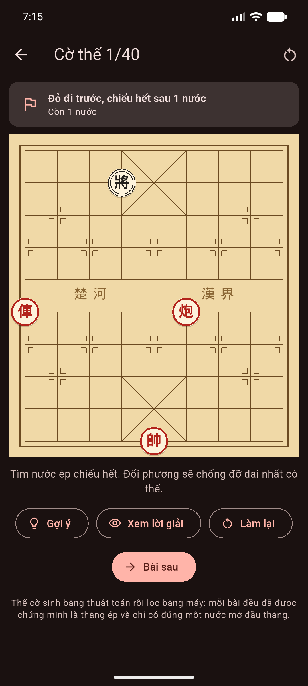
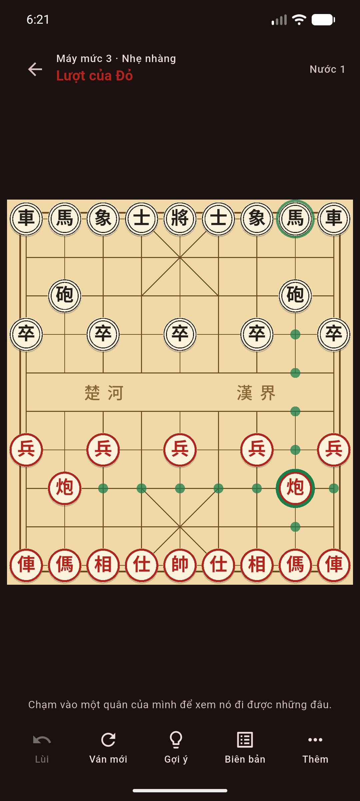
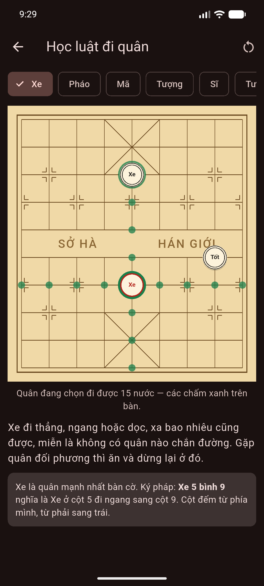
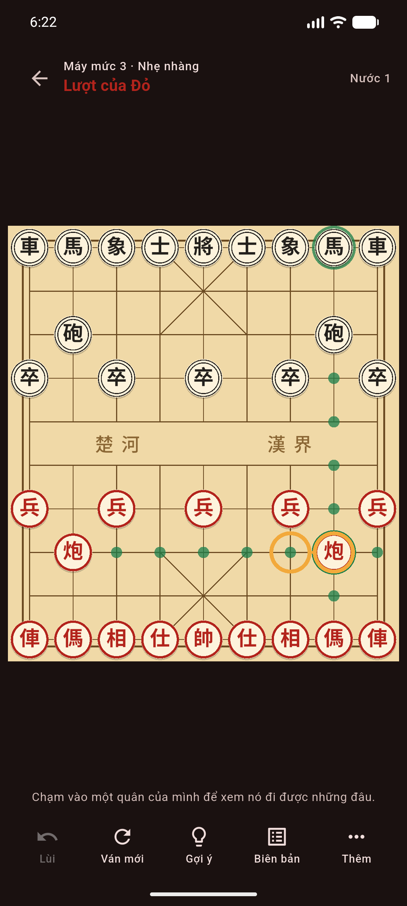

PHÁO đầu
Cờ tướng tiếng Việt
Học luật từ con số không, chơi ngay khi không có mạng, và có đối thủ máy tám mức để đánh cùng. Không tài khoản, không quảng cáo, không đòi quyền gì của bạn.
Bản 0.7.0 · APK 22 MB (Android 5.0 trở lên) · Windows x64 zip 11 MB
Có gì trong bản này
Ba lối vào, xếp theo đúng thứ tự người mới cần.
Học luật đi quân
Mười ba bài: bảy quân, ba luật riêng của cờ tướng, cùng chiếu hết, thoát chiếu và giá trị quân. Chạm vào quân là thấy nó đi được những đâu.
Lộ trình học
Trang chính chỉ tới đúng một việc kế tiếp — không bày ra mười thứ để bạn phải tự chọn. Suy từ chính tiến độ của bạn, không đòi tài khoản.
Đo trình 5 câu
Hai câu luật, ba thế cờ. Ba phút, xong là biết nên bắt đầu từ đâu và đánh máy mức nào.
Tàn cuộc
Năm dạng cơ bản, mỗi lần một thế khác. Trong đó có một bài giữ hoà — vì một Xe trơ trọi không phá nổi Sĩ Tượng toàn, và biết điều đó cũng là kỹ năng.
Luyện ký pháp
Hai chiều: đọc nước đi trên bàn thành chữ, và đi chữ thành nước. Cột đếm từ phía mình từ phải sang trái — chỗ người mới nhầm nhiều nhất.
Từ điển thuật ngữ
65 mục, ba cột: tiếng Việt · chữ Hán · tiếng Anh. Gõ không dấu cũng tìm được.
Chơi với máy, tám mức
Từ mức người mới thắng được tới mức máy nghĩ hết sức. Có nút Gợi ý chỉ nước nên đi.
Khai cuộc
Chín khai cuộc hay gặp nhất — Pháo đầu, Bình phong mã, Thuận pháo… — kèm chữ Hán và ý tưởng đứng sau. Tua từng nước để thấy thế trận hình thành. Không phải sách khai cuộc: có tên và ý, không có biến.
39 bài chiến thuật
Thế trung cuộc lấy từ ván máy tự đối, mỗi bài có đúng một nước hơn hẳn. Khác kho cờ thế: bài chiếu hết thì máy chứng minh được, còn bài ở đây chỉ có máy chấm là hơn.
300 bài cờ thế
Thế Đỏ đi trước thắng, chia theo chiếu hết 1, 2 hay 3 nước. Đi sai thì bàn cờ lùi lại và nói ngay — cờ thế là bài toán có lời giải, không phải ván cờ.
Chơi hai người chung máy
Có gợi ý nước đi, hoàn tác, biên bản ván, và tuỳ chọn xoay bàn theo lượt.
Ba bộ chữ trên quân
Mặc định là chữ Hán, đúng như quân cờ gỗ ngoài đời — app mang theo phông riêng nên bàn cờ trông giống hệt nhau trên mọi máy. Đổi được sang Hán giản thể, hoặc sang chữ Việt (Tướng · Sĩ · Tượng · Xe · Pháo · Mã · Tốt) cho người chưa đọc được chữ Hán.
Ký pháp Việt
Biên bản ghi kiểu Pháo 2 bình 5, đúng cách người Việt đọc ngoài đời. Đổi sang toạ độ kiểu quốc tế được.
Nhìn kém vẫn chơi được
Cỡ chữ trên quân chỉnh riêng, không phụ thuộc cỡ chữ hệ thống. Hai bên khác nhau cả ở độ dày viền chứ không chỉ ở màu.
Quân trượt, có tiếng, kéo thả được
Quân trượt sang chỗ mới thay vì nhảy cóc, quân bị ăn mờ dần. Bốn tiếng: đi, ăn, chiếu, kết ván — tắt được. Kéo thả quân đi cũng được, y như chạm hai lần.
Thoát app không mất ván
Ván đang dở được ghi lại sau mỗi nước, không chờ lúc thoát. Mở app lên là có ô Chơi tiếp ngay trang chính, đúng đối thủ và đúng giờ còn lại.
Đồng hồ
Cờ chớp 5+3, cờ nhanh 10+5, tiêu chuẩn 25+10 — hoặc không bấm giờ. Đồng hồ dừng khi app xuống nền, để bạn không mất ván vì một cuộc gọi.
Chấm ván
Xếp loại từng nước, biểu đồ thế cờ, và chỉ ra nước đáng lẽ nên đi. Ván 100 nước chấm xong trong khoảng 21 giây, bảng hiện đủ dòng ngay rồi điền số dần.
Lịch sử ván và thống kê
Giữ 200 ván gần nhất, xuất và nhập biên bản. Bảng điểm yếu nói bạn hỏng nhiều nhất ở chặng nào và hay cho không quân gì — suy từ chính ván của bạn.
Sổ tay lỗi
Những nước bạn đi hỏng tự thành bài tập. Đánh lại đúng thế cờ đó — và không bắt đoán trúng nước máy chọn, chỉ cần một nước không làm mất thế cờ.
Nhìn qua
Ảnh chụp từ bản 0.4.1 chạy thật, không dựng lại.





Luật đúng tới đâu
Không nói suông. Perft là phép đếm số thế cờ có thể có ở từng độ sâu — nó bắt gần như mọi lỗi luật. Con số của app khớp đúng bảng chuẩn công bố:
| Độ sâu | 1 | 2 | 3 | 4 | 5 | 6 |
|---|---|---|---|---|---|---|
| Số thế cờ | 44 | 1 920 | 79 666 | 3 290 240 | 133 312 995 | 5 392 831 844 |
Gồm cả những chỗ cờ tướng khác cờ vua nhiều nhất: cản chân Mã, Pháo ăn qua ngòi, Tượng không qua sông, Tướng đối mặt, và hết nước đi là thua chứ không hoà.
Độ sâu 6 — hơn 5,3 tỉ thế cờ — chạy hết 19 phút 44 giây và khớp đúng con số công bố. Đó là mốc chuẩn ngoài cuối cùng của phần luật: không còn chỗ nào là "tin chứ chưa đo".
Cờ thế không chép từ sách
Cờ tướng không có kho bài tập mở như cờ vua. Thay vì chép thế cờ từ sách — vướng bản quyền, mà chép theo trí nhớ thì sai vẫn hợp lệ và không ai phát hiện ra — 300 bài ở đây được sinh bằng thuật toán rồi lọc bằng máy.
Mỗi bài phải qua bốn cửa mới được vào kho:
- Thế cờ có thật — không phải thế không ván nào tới được.
- Đỏ đi trước ép thắng đúng số nước đã ghi, không hơn không kém.
- Đúng một nước mở đầu thắng — nhiều đường thì mò cũng trúng.
- Đường thắng mẫu đi được thật và kết thúc bằng thế hết nước đi.
Lúc bạn giải, trọng tài là chính bộ giải chứ không phải lời giải chép sẵn: mọi nước còn giữ được thế thắng đều được chấp nhận, không bắt bạn đoán trúng đúng một đường mà người ra đề nghĩ ra. Còn máy thì chống đỡ dai nhất có thể — để nó đỡ dở thì bạn thắng mà chẳng học được gì.
Chỗ yếu, nói luôn: cách này chỉ sinh được thế chiếu hết ngắn, không sinh được thế trung cuộc có ý nghĩa. Và độ khó ở đây là số nước, không phải Elo — một bài 1 nước có thể khó hơn một bài 3 nước.
Máy đấu được đo, không phải được khen
Mỗi phần của máy đấu phải tự thắng được bản không có nó qua 32 ván tự đối mới được nhận vào bản phát hành. Đây là toàn bộ số đo, kể cả hai kết quả xấu:
| Phần thêm vào | Đo được | Nhận? |
|---|---|---|
| Tìm kiếm cơ bản, đấu với bản đi ngẫu nhiên | 32–0–0 | có |
| Sắp nước + bảng chuyển vị (số nút duyệt) | còn 0,5% | có |
| Đào sâu chuỗi đổi quân | 65,6% | có |
| Điểm theo vị trí quân trên bàn | 87,5% | có |
| An toàn Tướng | 51,6% | không |
| Giá Pháo/Mã đổi theo giai đoạn ván | 48,4% | không |
Hai phần cuối đúng về lý thuyết nhưng đo không ra tác dụng, nên đã tắt. Ở 32 ván chúng ra 54,7% và 57,8% — nghe như có ích; đo lại 64 ván với hạt ngẫu nhiên khác thì còn 51,6% và 48,4%. Con số đẹp ở mẫu nhỏ là nhiễu chứ không phải cải tiến.
Chưa có gì
Nói trước để bạn khỏi tải về rồi mới biết.
Bản 0.7.0 chưa có
- Bài tập chiến thuật từ ván thật (cờ thế hiện chỉ có thế chiếu hết ngắn)
- Đa ngôn ngữ — hiện chỉ có tiếng Việt
- Chơi qua mạng
Hai con số của phần chấm ván phải nói rõ: độ chính xác và điểm tự đo đều là số chọn ra, không phải đo được. Cờ tướng không có kho ván chấm sẵn để hiệu chỉnh như cờ vua, và tám mức máy thì chưa ai đo bằng người thật. Dùng để xem mình có khá lên không, đừng đem so với điểm của phần mềm khác. App nói kèm điều này ngay trên màn hình.
Và một điều về luật: luật cấm đuổi mãi chưa được cài. Luật cấm chiếu mãi thì đã có — lặp thế ba lần do một bên chiếu hoài thì bên đó thua, không phải hoà. Nhưng "đuổi" khó định nghĩa cho chính xác hơn "chiếu" nhiều, và cài sai luật đuổi thì xử thua oan một bên đang chơi đúng. App nói rõ điều này ngay trong màn hình.
Quyền và dữ liệu
Ngắn thôi, vì thật sự không có gì.
Không xin quyền nào của bạn
Không mạng, không lưu trữ ngoài, không thông báo, không rung, không vị trí. Bản kê khai chỉ có đúng một quyền nội bộ do thư viện Android tự thêm — giải thích ở đây.
Không thu thập gì
Không tài khoản, không quảng cáo, không đo đạc hành vi. Cài đặt của bạn nằm trong máy bạn.
Chạy được khi tắt mạng
Toàn bộ máy đấu chạy ngay trên máy bạn. Bật chế độ máy bay vẫn chơi bình thường.
Vì sao tên là “PHÁO đầu”
Pháo đầu là khai cuộc phổ biến nhất của cờ tướng: đưa Pháo về cột giữa, nhắm thẳng vào Tướng đối phương. Cùng nhà với app cờ vua TỐT thí — cũng lấy một nước cờ ai cũng biết làm tên.